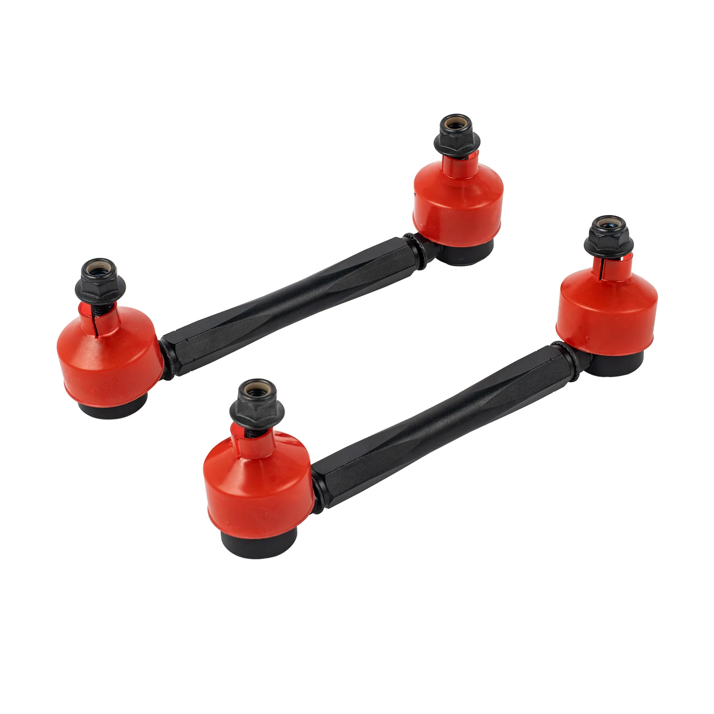

1 / 4Front Stabilizer łącznik stabilizatora Do Mercedes Benz W203 2000-07 CLK W209 2002-2009 PZ282010
Zastosowanie: Można ich używać jako uniwersalnych ogniw końcowych, jeśli wymiary odpowiadają wymaganiom użytkownika. Zwykle był używany do obniżonych samochodów, których łączniki końcowe OEM są zbyt długie do zainstalowania. Cechy produktu: Wykonane ze stopu stali o wysokiej wytrzymałości Kuty przegub kulowy z precyzyjną obróbką CNC Proces malowania proszkowego z długotrwałą ochroną przed rdzą W zestawie wszystkie ś…
Application: Can be used as universal end links if measurement matches specs that user needs. Usually it was used for lowered car which the OEM end links is too long to install. Features: Constructed of High-Strength Steel Alloy Forged ball joint with CNC precision machining Powdercoating Process with long time Rust protection All bolts and nuts included for installation Overall length (Shortest - Longest): 170MM-215MM (bolt to bolt) Ball Joint Stud Size: 10MM It allows adjust on/off the car Return and Refund Policy: Thanks for shopping with us. You can feel free to contact us if you are not satisfied with your purchase. You have 30 calendar days to return the item from the date you received if the product and package in good condition. All shipping charges are non-refundable. To be eligible for a return, please send us some photos about the product and package on your side. We just want to make sure the products and package in good condition before you send it back to us. Warranty: All the items carry standard 1 year warranty from the date of purchase. Proof of purchases is required and it's better to send us your order number for check. In order to speed up warranty claim, please show us images documents as much as details. Pictures and videos are good enough at most time and we don't need the defected items back. Sometimes we may ask for more data to confirm what's the problem and it can help us to fix it better.
699,99 PLN
Opis produktu
Zastosowanie:
- Można ich używać jako uniwersalnych ogniw końcowych, jeśli wymiary odpowiadają wymaganiom użytkownika. Zwykle był używany do obniżonych samochodów, których łączniki końcowe OEM są zbyt długie do zainstalowania.
Cechy produktu:
- Wykonane ze stopu stali o wysokiej wytrzymałości
- Kuty przegub kulowy z precyzyjną obróbką CNC
- Proces malowania proszkowego z długotrwałą ochroną przed rdzą
- W zestawie wszystkie śruby i nakrętki potrzebne do montażu
- Długość całkowita (najkrótsza - najdłuższa): 170 MM-215 MM (śruba do śruby)
- Rozmiar kołka przegubu kulowego: 10 MM
- Umożliwia regulację włączania/wyłączania samochodu
Polityka zwrotów i zwrotów:
- Dziękujemy za zakupy u nas. Jeśli nie jesteś zadowolony z zakupu, możesz się z nami skontaktować.
- Masz 30 dni kalendarzowych na zwrot przedmiotu od daty otrzymania, jeśli produkt i opakowanie są w dobrym stanie. Wszystkie opłaty za wysyłkę nie podlegają zwrotowi.
- Aby kwalifikować się do zwrotu, prześlij nam kilka zdjęć produktu i opakowania po Twojej stronie. Chcemy tylko upewnić się, że produkty i opakowanie są w dobrym stanie, zanim odeślesz je do nas.
Gwarancja:
- Wszystkie produkty objęte są standardową roczną gwarancją liczoną od daty zakupu.
- Wymagany jest dowód zakupu. Lepiej przesłać nam numer zamówienia w celu sprawdzenia.
- Aby przyspieszyć realizację zgłoszenia gwarancyjnego, prosimy o przedstawienie nam dokumentów zawierających zdjęcia i szczegóły. Zdjęcia i filmy są w większości przypadków wystarczająco dobre i nie potrzebujemy zwrotu uszkodzonych elementów.
- Czasami możemy poprosić o więcej danych, aby potwierdzić, na czym polega problem i pomóc nam w lepszym jego rozwiązaniu.
Application:
- Can be used as universal end links if measurement matches specs that user needs. Usually it was used for lowered car which the OEM end links is too long to install.
Features:
- Constructed of High-Strength Steel Alloy
- Forged ball joint with CNC precision machining
- Powdercoating Process with long time Rust protection
- All bolts and nuts included for installation
- Overall length (Shortest - Longest): 170MM-215MM (bolt to bolt)
- Ball Joint Stud Size: 10MM
- It allows adjust on/off the car
Return and Refund Policy:
- Thanks for shopping with us. You can feel free to contact us if you are not satisfied with your purchase.
- You have 30 calendar days to return the item from the date you received if the product and package in good condition. All shipping charges are non-refundable.
- To be eligible for a return, please send us some photos about the product and package on your side. We just want to make sure the products and package in good condition before you send it back to us.
Warranty:
- All the items carry standard 1 year warranty from the date of purchase.
- Proof of purchases is required and it's better to send us your order number for check.
- In order to speed up warranty claim, please show us images documents as much as details. Pictures and videos are good enough at most time and we don't need the defected items back.
- Sometimes we may ask for more data to confirm what's the problem and it can help us to fix it better.
FAPO Polska
Ten produkt obsługujemy lokalnie
Autoryzowana obsługa
FAPO Polska prowadzi katalog, kontakt i zamówienia bez odsyłania klienta do zewnętrznych sklepów.
Dobór po aucie
Sprawdzamy dopasowanie produktu do pojazdu, rocznika i wersji przed finalizacją zamówienia.
Wsparcie po zakupie
Masz kontakt w Polsce w sprawach zamówień, wysyłki, gwarancji i zwrotów.